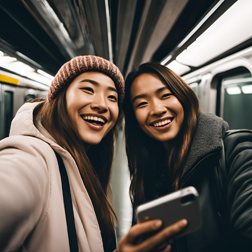

Reencontro de amigas que não se viam á 10 anos.
Cinthya e Bianca não se viam desde a formação do Ensino Médio, quando o encontro inesperado ocorreu na
estação Tatuapé.
Sentido-seFeliz
Estação Suzano
Data de Publicação: 26/09/2024
Data que ocorreu: 20/09/2024

Em um reencontro emocionante que parece ter saído de um filme, Cinthya Almeida
e Bianca Costa, duas amigas de infância, se encontraram inesperadamente na movimentada estação Tatuapé, dez anos
após a formatura do Ensino Médio. O encontro, marcado pela nostalgia e alegria, não só resgatou memórias do
passado, mas também reavivou uma amizade que, embora distante, sempre esteve presente.
Cinthya, uma designer gráfica de 28 anos, e Bianca, professora de dança, se conheceram no colégio e construíram
uma forte amizade ao longo dos anos. Com a formatura, a vida levou cada uma por caminhos diferentes, resultando
em uma separação que parecia definitiva.
"Eu não acreditava que iria vê-la aqui", contou Cinthya, com um sorriso radiante. "A última vez que nos
encontramos foi na festa de formatura. Foi uma surpresa maravilhosa."
Bianca, igualmente emocionada, compartilhou: "Estava passando pela estação quando a vi. O coração disparou! As
lembranças da escola voltaram à tona. A sensação era como se o tempo não tivesse passado."
As duas se sentaram em uma cafeteria próxima, onde começaram a reviver momentos da adolescência. Risadas ecoavam
enquanto compartilhavam histórias sobre os anos passados, os desafios enfrentados e as conquistas alcançadas.
“Lembramos daquela viagem à praia, quando quase perdemos o ônibus! Foi uma aventura épica”, relembrou Bianca,
com os olhos brilhando. Cinthya acrescentou: “Esses momentos sempre estarão guardados no meu coração.”
O reencontro, que inicialmente parecia um mero acaso, revelou-se um divisor de águas para ambas. Elas decidiram
que não iriam deixar o tempo passar novamente sem se ver. "A vida é curta e preciosa. Prometemos que seremos
mais próximas", afirmou Cinthya.
Com a cidade de São Paulo pulsando ao fundo, a história de Cinthya e Bianca é um lembrete poderoso de que
algumas amizades são eternas, independentemente do tempo e da distância. O reencontro na estação Tatuapé não só
marcou o recomeço de uma velha amizade, mas também trouxe à tona a importância das conexões humanas em meio à
correria da vida moderna.
Fique ligado para mais histórias inspiradoras de reencontros e amizades que superam o tempo.
Leia sobre mais histórias!